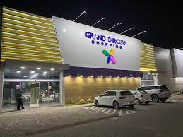
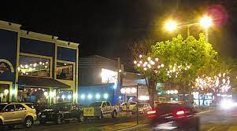

Dirceu
O Conjunto Habitacional Dirceu Arcoverde, localizado na região Sudeste de Teresina, na região do Itararé, tornou-se centro da vida socioeconômica de um verdadeiro conglomerado de bairros, vilas e favelas que orbitam ao seu entorno e respondem hoje por uma população superior a 200 mil habitantes. O bairro Dirceu cresceu em número de habitantes e se desenvolveu socioeconômica e culturalmente, passando a ser conhecido por Grande Dirceu.
Mocambinho

O bairro Mocambinho, localizado na zona norte da cidade de Teresina, capital do Piauí, é um dos maiores e mais desenvolvidos bairros da região. Ele oferece uma boa infraestrutura de lazer, moradia, transporte e educação. O bairro possui dois grandes espaços verdes: o Jardim Botânico de Teresina, que é referência na pesquisa e cultivo de plantas medicinais, e o Parque do Mocambinho, inaugurado em 2019, que oferece estrutura de esporte e lazer ao redor da maior lagoa urbana de Teresina. O Mocambinho também é conhecido por oferecer produtos e serviços que anteriormente eram disponibilizados apenas no centro da cidade.
Fátima
O bairro Fátima, localizado em Teresina, é um bairro completo que atende diversos perfis. Ele conta com uma excelente estrutura urbana, restaurantes movimentados, opções de educação, como escolas e faculdades, serviços bancários, de saúde e esporte. A Avenida Nossa Senhora de Fátima, a principal do bairro, concentra a rota gastronômica da cidade. O bairro possui boa infraestrutura urbana e diversas opções de comércio e serviços, como bancos, academias, supermercados e o Hospital São Paulo.